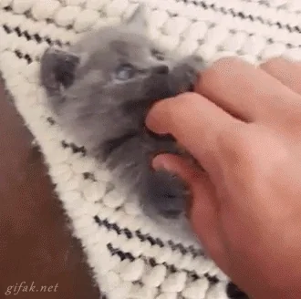
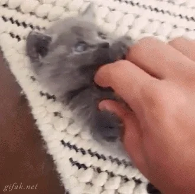

¡Bienvenido a nuestra web!
Somos amantes de los gatitos y aquí encontrarás toda la información que necesitas sobre estos adorables animales.
Nuestros Gatitos


Servicios para Gatitos
Ofrecemos una amplia gama de servicios para satisfacer todas las necesidades de tus gatitos, desde cuidados médicos hasta juguetes divertidos.
Contáctanos
¿Tienes alguna pregunta o sugerencia? ¡Contáctanos!
 
